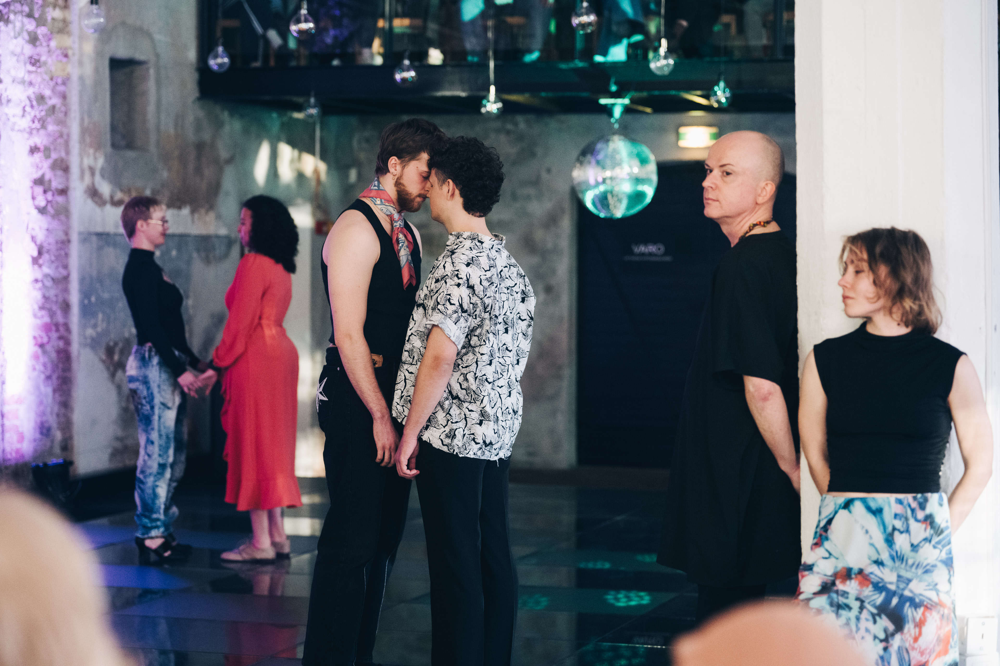
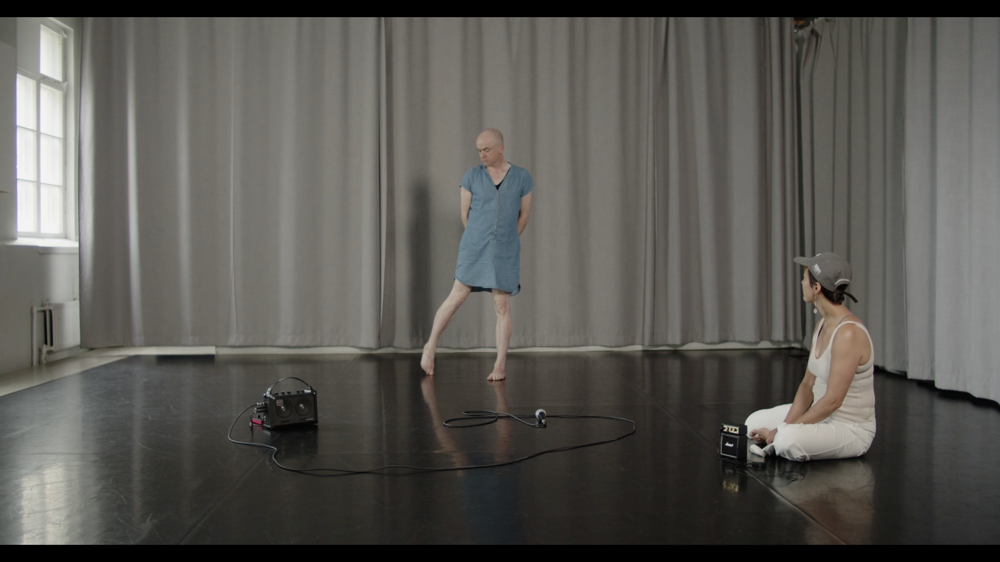
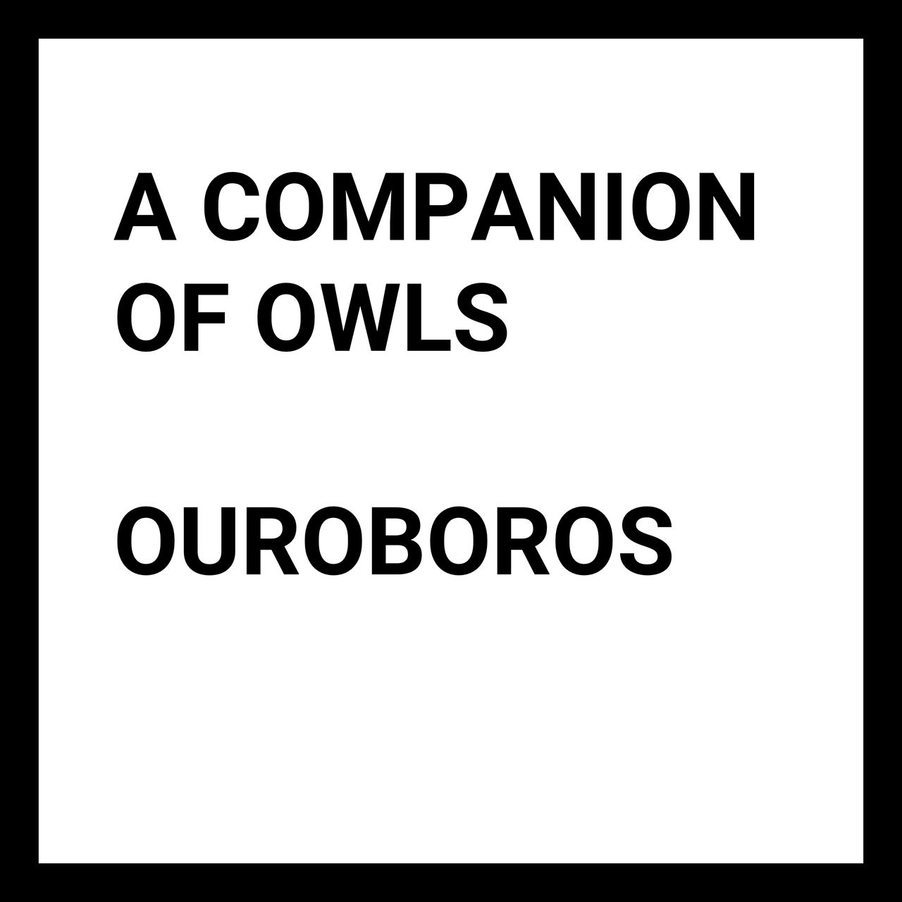
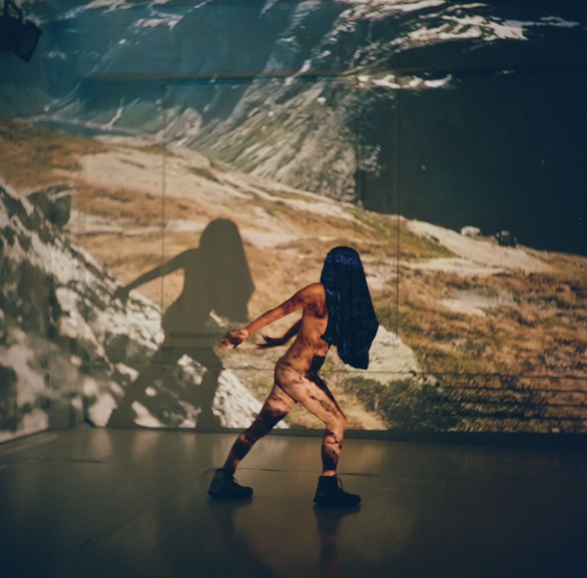
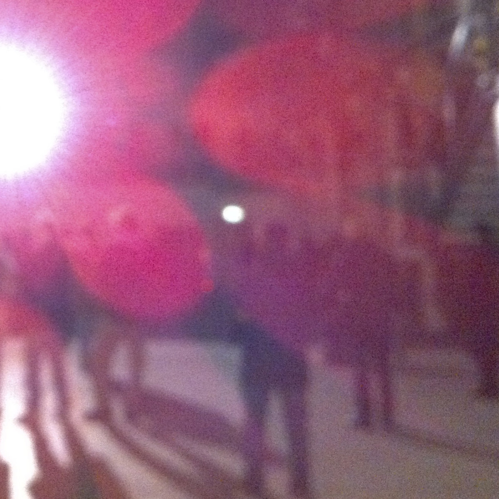

Selected Works
Queer Tango Club - Baltic Takeover, 2025
“Queer Tango Club” is a research project, a performance, and a temporary collective of people who come together to learn and dance the Argentine tango. While rehearsing the dance steps, the “Queer Tango Club” also envisions queer futurities and social structures that transcend current norms and limitations related to gender, sexuality, and identity. Spectators are invited to witness how the Argentine tango becomes a language to express the desire for connection and intimacy, but also to question rules, expectations, and etiquettes enforced on all bodies.
Idea, direction: Katrīna Dūka
Performers: Nadja Leham, Aya Ahmed, Oskars Francis Bārzdiņš, Artis Krists Mednis, Ruby Louise Rose and Vellamo Ikonen
Composer: Līva Blūma
Tango teacher, choreography: Aigars Stirna
Photography: Jussi Virkkumaa
hardcore_dysphoria (tgirl_video_postcard_club-v2), 2024
My contribution to the Tgirl Video Postcard Club organised by Morgan M Page.
“I’d been working on a project with my choreographer/dancer friend Nadja. During a shoot for a work-in-progress video, Nadja asked me to strike a pose, but I became extremely uncomfortable about standing by myself in front of the camera. This video is my attempt to describe that feeling.”
Legs, voice and sound: Ruby Louise Rose
Words: ANOHNI
Trans and Queer Joy as an Act of Resistance, 2024



Dance/sound: Ruby Louise Rose
Dance/sound: Nadja Pärssinen
Documentation: Hannu Karjalainen
Video documentation was shown on Titanik’s artelaiset wall throughout July, 2024.
Ouroboros, 2022

The sound of the Korg Monotron Delay’s PT2399 echo processor chip and MS-20-based low-pass filter caught in an ever-evolving feedback loop.
Released March 17, 2022 by Hard Return, a label for repetitive/persistent music.
Let the wandering talk on its own behalf, 2021

“Let the wandering talk on its own behalf” is a collaboration between choreographer/dancer Nadja Pärssinen and sound artist Ruby Louise Rose.
Taking Pärssinen’s experience of hiking the Trolltunga trail in Norway as its starting point, “Let the wandering talk on its own behalf” uses movement, sound and video to explore the relationship between the female body, nature, mythology and memory.
hardcore_dysphoria, 2020-2021
After finally accepting that I am a transgender woman after years of struggling with my mental health, it became important to me to find art, literature and music that I could identify with. Unable to see myself in more mainstream depictions of queer and trans culture, I was drawn to non-binary and transgender artists working on the fringes of black metal, punk and hardcore dance, such as Liturgy’s Haela Ravenna Hunt-Hendrix, Genital Shame’s Erin Dawson, G.L.O.S.S. (Girls Living Outside Society’s Shit) and Kilbourne.
Inspired by their examples, I began looking for a way to explore my own gender identity through sound work that combined my interests in computer music, algorithmic composition, the transformation of the human voice, harsh noise, grindcore and losing myself on the dancefloor.
My love for the ‘faster, louder, harder’ end of extreme music led me to extratone, touted on Bandcamp as ‘the world’s fastest music genre.’ Extratone is a form of electronic music that operates at tempos of over 1,000 beats per minute, occasionally reaching the absurd heights of 10,000 BPM. Often dismissed as a joke, extratone is anything but; it has a story, history and lineage in what the writer Simon Reynolds calls the hardcore continuum. It has a community, a DIY punk-like ethos and a singular aesthetic that sets it apart from other genres.
But what really drew me to extratone was the fact that something so extreme—often rightly pigeonholed as hypermasculine and aggressive—was still thought of as, essentially, dance music, and dance music has deep roots in queer and trans culture. Here was a space where I could combine all of my interests and explore the tension between sonic intensity and fragile intimacy. By queering the sonic traditions and musical form of extratone, my sound work could become an exploration of gender identity and a kind of joyful introspection performed at a bewildering tempo and volume.
I began by experimenting with algorithmically generated “extratone_studies” (2020): brief bursts of hyper-speed, distorted, ‘gabber-style’ kick drums created in the visual programming language Pure Data.
More studies followed (“sucker_variations” (2020) and “hardcore_dysphoria” (2021)), adding ‘hoover-style’ synths and vocal samples into the mix, but it wasn’t until I began adding my own pitch-shifted and transformed vocals (“vocal_feminisation_techniques” (2021)) that the music began to approach the combination of sonic intensity and fragile intimacy I was looking for.
It is extremely important to me that I get my work out there and for it to ‘be seen.’ I hope that something that feels so far outside of mainstream queer and trans culture can help others struggling with their gender identity and mental health, in much the same way that the work of Liturgy, Genital Shame, G.L.O.S.S. and Kilbourne helped me.
You Suffer/NATO Phonetic Alphabet, 2020
Taking inspiration from the coded messages transmitted by Cold War numbers stations, the piece “You Suffer/NATO Phonetic Alphabet” explores themes related to speed, technology and power. It consists of a seemingly random collection of 10526 lower case letters, recited in the NATO phonetic alphabet over 1.316 days. When presented as a durational performance, an audio recording of the piece will be broadcast into the performance space. The performer will sit for the full duration of the broadcast (1 day, 7 hours, 34 minutes and 48 seconds), typing each letter into a text editor on a computer. Upon completion of the broadcast, the performer will save the file as a simple text document. This text document will then be imported into an audio editor as an 8000 Hz, 8-bit, mono raw audio data file. Upon playback of this file, the performer will be “rewarded” with a particularly lo-fi 1.316-second blast of Napalm Death’s “You Suffer”: ‘You suffer, but why?’ The piece can also be presented as an installation, with the performer replaced by speech recognition software.
“You Suffer” is a song by the British Grindcore band Napalm Death. The song has earned a place in the Guinness World Records as the shortest recorded song ever. It is precisely 1.316 seconds long and consists entirely of the lyrics ‘You suffer, but why?’ The NATO phonetic alphabet is a spelling alphabet used by airline pilots, police, members of the military, and other officials when communicating over radio or telephone. The purpose of the phonetic alphabet is to ensure that letters are clearly understood even when speech is distorted or hard to hear.
Using an audio editor, I converted an MP3 of “You Suffer” by Napalm Death into an 8000 Hz, 8-bit, mono raw audio data file. I then opened this raw audio data file in a hex editor. This gave me a list (10526 items long) of the values of each sample in hexadecimal (base 16, or hex) format. After converting these values into decimal (base 10), I scaled and transformed these numbers into a range of integers between 97 and 122. These integers correspond to the ASCII codes for the lowercase alphabet (a-z). I then converted these ASCII codes into their corresponding characters and saved the results as a text file. Finally, I converted each letter in this text file into its corresponding word in the NATO phonetic alphabet and made a patch in Pure Data that would recite all 10526 characters of the text file over 1.316 days (1 day, 7 hours, 34 minutes and 48 seconds). The Pure Data patch uses samples taken from the original ICAO (International Civil Aviation Organisation) phonograph recording illustrating the correct way to pronounce the words of the NATO phonetic alphabet (officially denoted as the International Radiotelephony Spelling Alphabet). This was distributed to all countries in November 1955 when the alphabet was introduced.
Respiration Field, 2019

When the artist Teemu Lehmusruusu asked me to come up with the sound for “Respiration Field,” the only guidance he gave me was that he wanted a drone, and that he wanted to avoid any obvious ‘breathing’ sounds.
A recurring theme throughout my work is the use of simple sine waves. They are the basic building blocks of more complex waves—any sound can be decomposed into, or built up from, sine waves.
For “Respiration Field,” I wanted to create a ‘field of sound,’ one where the individual tone of each separate chamber would combine with all the others—alternately interfering constructively and destructively—generating a beating, a pulse, suggestive of life and the repetitive cycles of inhalation and exhalation.
Now for the technical bit!
Attaching an exciter directly to the glass turns each of the five chambers into a resonator. The mixed output of two sine wave generators—one fixed, the other variable—drives the exciter. Initially, the two sine waves begin in unison—that is, they share the same frequency—but as the carbon dioxide levels inside the chamber fluctuate, the variable sine wave generator, controlled by the chamber’s carbon dioxide sensor, slips out of unison with the fixed generator. This difference in frequency generates a beating, perceived as a periodic variation in volume. The greater the carbon dioxide levels within the chamber, the faster the beating.
Due to the multi-directional nature of the resonating glass, the beating tones from each chamber mingle and interact in varied and unpredictable ways as the listener moves around the installation.
Intimacy, 2017
As an artist and performer, the computer has been my main instrument since the early nineties. Throughout that time I have often struggled with how to perform with it in front of an audience. I have always felt at a remove, unable to forge that intimate connection that some musicians seem to have with their chosen instrument. Things began to change when I stopped relying on third-party software and began to create my own instruments with the open-source audio and video programming environment Pure Data, although I still felt that there was a disconnect between my physical gestures and the resulting audio output.
I finally had an epiphany of sorts after accidentally routing the input from my laptop’s built-in microphone straight back out through the built-in speakers, resulting in an angry howl of feedback. In that moment my laptop became a harmonic oscillator: an electronic amplifier connected in a feedback loop with its output fed back into its input. The position of my hands near the built-in microphone acted as a kind of frequency selective filter, with every tiny movement or gesture sculpting the sound in real-time. The physical properties of the laptop, its size, shape, position of the microphone and speakers, even the angle of the screen, all became part of the instrument. It was no longer just about the abstract layers of computation going on within.
As my ability to perform with this instrument relies on the interaction between the laptop’s built-in microphone and speakers, any external amplification is out of the question. Instead I propose an intimate performance, one where the audience can concentrate on the delicate, high-pitched sounds produced by the laptop’s tiny speakers. In fact, due to the extremely unstable nature of the sounds produced by audio feedback, everyone in the performance space will become a living, breathing part of the instrument, with even the slightest shuffle, cough or whisper having the potential to greatly affect the output.
Sketch for Electric Guitar, Laptop and Electromagnetic Interference, 2015
Sketch for single coil pickup electric guitar, monophonic pitch tracking sine wave oscillator, three randomly reversible audio buffers and electromagnetic interference.
Review by Marc Weidenbaum at Disquiet.com.
Threnody for Elementary Satellite 1, 2015
Accompanied by Sputnik 1’s mournful beeps, two quarter-speed tape loops—taken from a vinyl copy of the 1981 “The Music of Cosmos” soundtrack—trace a slow elliptical orbit around the record’s run-out groove…
Piece composed for the third edition of “Gwaith Sŵn’s Sonic Darts” radio show, first broadcast on 7 September 2015 on Resonance104.4fm. The theme for the show was space and science fiction.
The Swallows of Chernobyl, 2015
An audio piece consisting of a loop of birdsong passed through a “side-chain” gate triggered by a geiger counter. Whenever the geiger counter triggers the gate a tiny piece of the loop is “ducked” (silenced). Eventually all traces of the birdsong will be erased from the loop.
This piece was inspired by a Scientific American article about biologists researching the effects of low-dose radiation on living things by studying common barn swallows within the exclusion zones of both Chernobyl and Fukushima.
Echoic, 2014

The genesis of this album came from a shoebox full of old cassette tapes I had been dragging around for well over 20 years. Containing recordings made by my friends and I, these cassettes had slowly morphed from a type of hastily scribbled musical sketchpad into a tangible form of long-term memory: fragments of thoughts and ideas encoded deep within the tape’s magnetic subconscious.
Fearful of losing these precious memories, or at the very least the means to retrieve them, I pulled my barely functioning Walkman out of storage and began the long and arduous task of digitising this irreplaceable archive.
An unforeseen routing issue saw the sound of a 22-year-old living room rehearsal pass through my current live performance set-up. A jumble of digital filters and delays suddenly became my laptop’s echoic memory: audio from up to four seconds ago began to resurface, overlaying the present, forcing me to re-hear once overly-familiar sounds in an entirely new way…
Binary Modulation, 2013
This performance consisted of an Asus Eee PC 2G Surf running Debian Squeeze plus a Maplin Telephone Pick-Up Coil plugged into a Behringer Eurorack UB502 Mixer. The Eee PC was turned on and the following commands were entered via the command line:
cat /lib/modules/2.6.32-5-686/* > /dev/dsp
./howse/self "/bin/ps" "-ef" > /dev/dsp
The Book of Job/You Suffer, 2013
The Book of Job, commonly referred to simply as Job, is one of the books of the Old Testament. It relates the story of Job, his trials at the hands of Satan, his discussions with friends on the origins and nature of his suffering, his challenge to God and, finally, a response from God. An oft-asked question in The Book of Job is, ‘Why do the righteous suffer?’
“You Suffer” is a song by the British grindcore band Napalm Death, who are credited with defining the grindcore genre through their blend of hardcore punk and metal musical structures, aggressive playing, fast tempos and deep, guttural vocals. The song has earned a place in “The Guinness Book of Records” as the shortest recorded song ever. It is precisely 1.316 seconds long and consists entirely of the lyrics ‘You suffer, but why?’
“The Book of Job/You Suffer” consists of a plain text file, containing all 42 chapters of the King James Version of The Book of Job, imported as raw data into a sound editor at a rate of 76190 Hertz in order to produce a burst of audio precisely 1.316 seconds long.